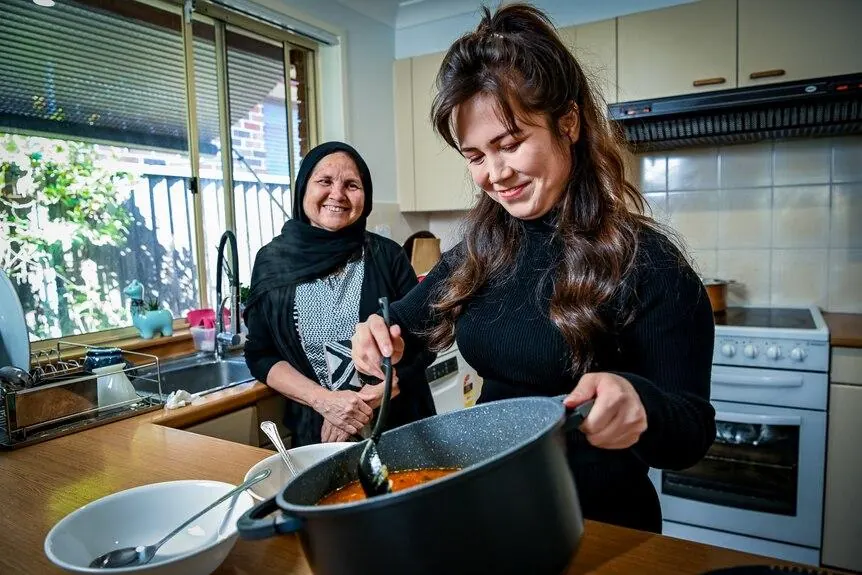
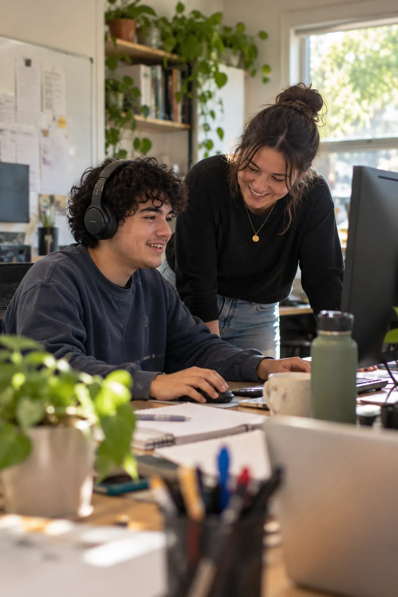

Home and living
Living by Design
A home that feels like yours.
Explore living arrangements shaped around your choices, relationships and everyday life, including ILO and individual SIL.
Explore Living by DesignFrom finding a place to call home to preparing for work, navigating your NDIS plan or receiving complex care — we start with what matters to you.

Home and living
A home that feels like yours.
Explore living arrangements shaped around your choices, relationships and everyday life, including ILO and individual SIL.
Explore Living by Design
Employment support
Your future starts with possibility.
Personalised, one-to-one support to explore work, build skills and take the next step after school.
Explore SLESCoordination of supports
Making sense of the NDIS. Together.
Help understanding your NDIS plan, finding services and making informed choices.
Explore Support Coordination
Complex care
Complex care needs. Experienced hands.
Individualised assistance for people with more complex health and daily living needs.
Explore High Intensity Supports & NursingYou don’t need to have everything figured out. Tell us what you’re looking for, and we’ll explore the next step together.